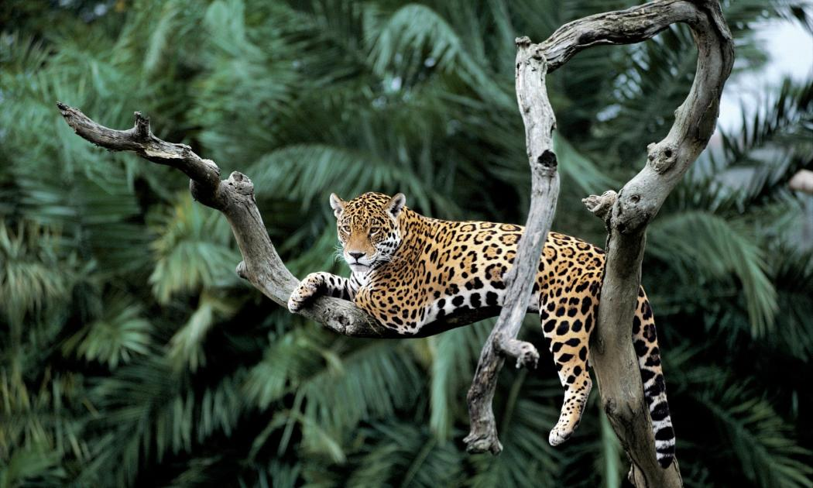

Etymology
"The name Amazon is said to arise from a war Francisco de Orellana fought with the Tapuyas and other tribes. The women of the tribe fought alongside the men, as was their custom. Orellana derived the name Amazonas from the Amazons of Greek mythology, described by Herodotus and Diodorus."
About
Location
"Nine countries share the Amazon basin—most of the rainforest, 58.4%, is contained within the borders of Brazil. The other eight countries include Peru with 12.8%, Bolivia with 7.7%, Colombia with 7.1%, Venezuela with 6.1%, Guyana with 3.1%, Suriname with 2.5%, French Guiana with 1.4%, and Ecuador with 1%."Preditory Animals
"The rainforest contains several species that can pose a hazard. Among the largest predatory creatures are the black caiman, jaguar, cougar, and anaconda. In the river, electric eels can produce an electric shock that can stun or kill, while piranha are known to bite and injure humans. Various species of poison dart frogs secrete lipophilic alkaloid toxins through their flesh. There are also numerous parasites and disease vectors. Vampire bats dwell in the rainforest and can spread the rabies virus. Malaria, yellow fever and dengue fever can also be contracted in the Amazon region."
Whole page source: Wikipedia Page